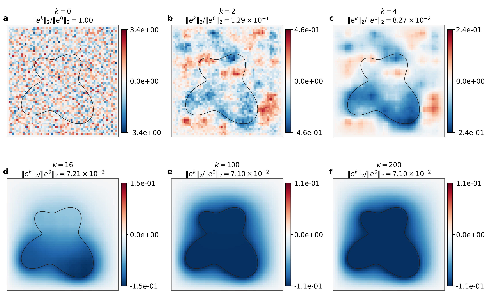
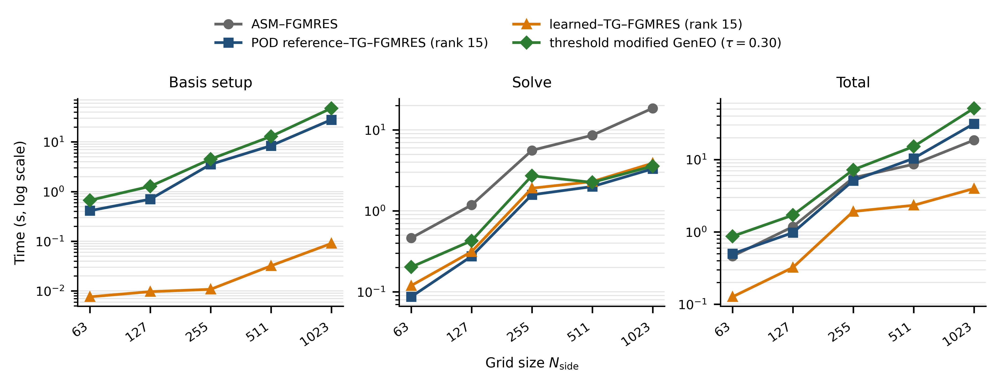
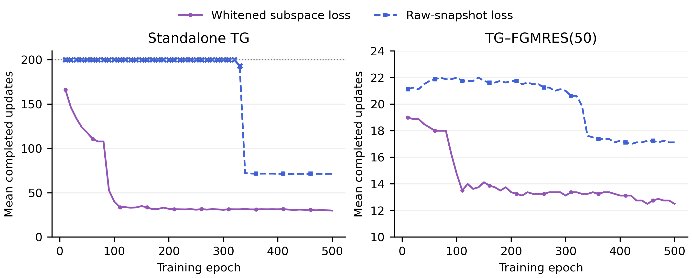

Lean 4 formal verification files accompany the work, apparently for the theoretical analysis, and are announced for release in the project repository.
Abstract
Efficient two-grid solvers for high-contrast parametric elliptic problems require coarse spaces that capture error components poorly reduced by local smoothing. As these components vary with the problem parameters, repeatedly constructing parameter-adaptive coarse spaces can be computationally expensive. We propose a coarse-space learning method based on finite-step errors generated by additive Schwarz smoothing. For each training parameter, proper orthogonal decomposition (POD) of smoothed-error snapshots in the discrete energy inner product defines a reference coarse space. A continuous-coordinate neural generator is then trained using a basis-invariant, whitened subspace loss, enabling the prediction of parameter-adaptive coarse spaces on unseen grids. We establish discrete perturbation estimates relating coarse-space discrepancies to the associated nonsymmetric two-grid operators and derive conditional finite-step Krylov residual-polynomial bounds without assuming stationary energy contraction. Numerical experiments on high-contrast interface problems, moving-interface Darcy flow, and nonlinear Forchheimer flow demonstrate effective solver performance across varying parameters and grid resolutions. On the finest static test grid, with approximately 264 times as many degrees of freedom as the training grid, the learned spaces achieve FGMRES iteration counts close to those of parameter-specific POD references and comparable to GenEO spaces, while substantially reducing repeated coarse-space construction costs.
Problem
Two-grid solvers for high-contrast parametric elliptic problems need coarse spaces that capture error components local smoothing reduces poorly. These components change with the parameters, so rebuilding adaptive coarse spaces such as GenEO for each parameter is expensive.
Approach
For each training parameter, random errors are smoothed by additive Schwarz for a fixed number of steps. POD of these smoothed-error snapshots in the discrete energy inner product gives a reference coarse space. A continuous-coordinate neural generator is trained with a basis-invariant, whitened subspace loss, so it can predict coarse spaces on unseen grids. The authors prove perturbation estimates linking coarse-space discrepancies to the nonsymmetric two-grid operators, plus conditional finite-step Krylov residual-polynomial bounds, and state that Lean 4 formal verification files will be released with the code.

Figure 9 : Evolution of a random initial error under ASM after k=0,2,4,16,100,200 updates
Results
Experiments cover static interface problems, moving-interface Darcy flow and nonlinear Forchheimer flow. On a test grid with about 264 times the training degrees of freedom, the learned spaces reach FGMRES iteration counts close to the parameter-specific POD references and comparable to GenEO. They also substantially reduce the cost of repeatedly constructing coarse spaces.

Figure 5 : Coarse-space construction, FGMRES solution, and total wall-clock times for the static interface problem. All timings are obtained using the same right-preconditioned FGMRES configuration.

Figure 4 : Solver performance over training epochs for the whitened subspace and raw-snapshot losses on eight independent validation fields.